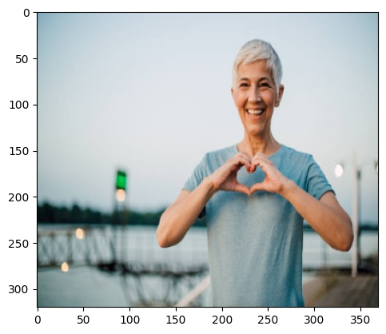

from pathlib import Path
## Do the imports
from torchvision.io import read_image
from torch.utils.data import Dataset
import glob
import matplotlib.pyplot as pltWe will try to create our custom dataloader for a dataset, outside the of datasets that come along inbuilt with the Pytorch sister libraries. For now, we are using a image dataset outside of Pytorch and sourced from a kaggle dataset, named Childeren vs Adults Classification. Please ensure to extract the compressed zip.
Import and Path Setups
base_path = '/home/boi-doingthings/Documents/datasets/child_or_adult/'train_dir = base_path + 'train/'
test_dir = base_path + 'test/'print('Train:',train_dir)
print('Test:',test_dir)Train: /home/boi-doingthings/Documents/datasets/child_or_adult/train/
Test: /home/boi-doingthings/Documents/datasets/child_or_adult/test/train_files_path = []
train_files_labels = []
for file in glob.glob(train_dir+"*/*"):
train_files_path.append(file)
train_files_labels.append(file.split('/')[-2])test_files_path = []
test_files_labels = []
for file in glob.glob(test_dir+"*/*"):
test_files_path.append(file)
test_files_labels.append(file.split('/')[-2])Create Dataset
class CvA_Dataset(Dataset):
def __init__(self,labels,files,target_transform):
self.labels = labels
self.files = files
self.target_transform = target_transform
def __len__(self):
return len(self.files)
def __getitem__(self,idx):
image = read_image(self.files[idx])
if self.target_transform is not None:
label = self.target_transform(self.labels[idx])
return image,labeldef target_transform(label):
return 1 if label=='adult' else 0Train
train = CvA_Dataset(train_files_labels,train_files_path,target_transform)plt.imshow(train[101][0].permute(1,2,0))<matplotlib.image.AxesImage at 0x7fabf8a35cf0>
len(train)680Test
test = CvA_Dataset(test_files_labels,test_files_path,target_transform)plt.imshow(test[78][0].permute(1,2,0))
print(test[78][1])0len(test)120Create DataLoaders
from torch.utils.data import DataLoaderTrain
train_data_loader = DataLoader(train,batch_size=16,shuffle=True)for i in next(iter(train_data_loader)):
print(len(i))16
16Test
test_data_loader = DataLoader(test,batch_size=16,shuffle=True)for i in next(iter(test_data_loader)):
print(len(i))16
16